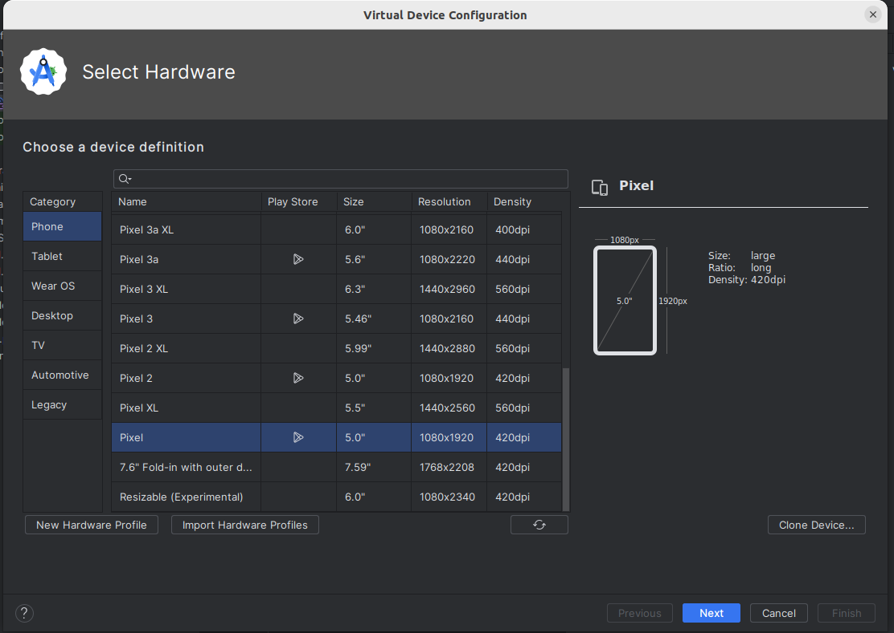

MAD Topic 2 : Introduction to Android Development
The Android mobile operating
system is the leading smartphone and tablet operating system. From a minority operating system only running on one phone (the T-Mobile G1) a few years ago it has grown into one of the leaders in the smartphone operating system field, along with iOS (on the iPhone), and to some extent, Windows Mobile.
Why develop for Android?
There is one very important difference between Android and many of its
competitors. It is an open source operating system, which means that you
are free to modify it for your own ends. Even more crucially for app
developers is that as a result of its open-source nature you can
develop and distribute applications without restriction. This is in
contrast to some of the other contemporary mobile development options in
which the operating system vendor restricts distribution to a single
channel owned by themselves, and "vets" software before making it
available. Android has an official distribution channel (the
Play Store), but this is more
liberal with accepting apps than some of the other vendors. Also, there are alternative distribution channels for Android such as F-Droid
.
Android versions
At this point it is worth elaborating on the various versions of Android. At the time of writing the percentages of devices running different versions are as below (this is taken from Android Studio):

The most recent version deployed on actual mobile devices is 14, however, as can be seen above, no devices had 14 installed as of October 1 (i.e 4 months ago at the time of writing) but 22.4% had 13 installed. Many devices are running 9 (Pie), 10 (Q), 11 (R), and 12 (S). The majority of devices are running Marshmallow (Android 6 or API level 23) upwards.
Another concept that you need to understand is the API level. The Android API is the set of classes which are used to program Android apps with. The API level denotes revisions to the Android API, in a sequence of positive integers starting from 1. Thus, the numbers used for the API levels are not the same as those used for the Android versions, but each API level corresponds to a particular version. The idea is that each time Android itself is updated, the API is updated too. For example:
- API level 15 corresponds to Android 4.0.3;
- API level 19 corresponds to Android 4.4;
- API level 23 corresponds to Android 6;
- API level 26 corresponds to Android 8.0;
- API level 28 corresponds to Android 9
- API level 30 corresponds to Android 11
- API level 31 corresponds to Android 12
When developing an Android app, you have to specify the minimum API level on
which your app will run. Thus an app with minimum API level 19, for example,
will only run on 4.4+. As seen above, the vast majority of devices
are running at least API level 19 (Android 4.4; KitKat), so if you specify
API level 19 as a minimum you will be targeting the majority of devices.
Runtime Environment
With standard Kotlin or Java, you compile to bytecode which is then run using the Java Virtual Machine (JVM). Android is similar but rather than using the standard JVM, it uses its own virtual machine and corresponding bytecode format, producing executable files known as DEX files. So "regular" Java bytecode will not run on Android and Android apps will not run on a regular JVM.
Dalvik was the original virtual machine, which versions of Android up to 4.4 used. With Android 5.0, a new virtual machine (ART : Android Runtime) (see here) is used instead.
See here for more details on Android
virtual machines.
Before we begin Android - some further features of Kotlin
Before we can begin Android development, we need to discuss some further features of Kotlin, which we have not discussed yet. We need to look at these features in order to understand some basic Android code.
Mappings: performing the same operation on all members of a list
Another common use of lambdas is to perform a mapping. A mapping transforms each member of an input list by a specified function, and returns a new list containing the transformed data. This example will convert each string in the input list to lower case and return a new list containing the lower case values:
fun main(args: Array<String>) {
val peopleList = listOf("Mark Cranshaw", "Rob Cooper", "Al Monger", "Mark Udall", "Margaret Jones")
val lowerCaseList = peopleList.map { person -> person.lowercase() }
println(lowerCaseList)
}
Note how we use the map() function to transform each member of peopleList by a specified lambda. The lambda here will take each member of the input list in turn (person) and return that member converted to lower case (i.e. person.lowercase()). So, the list returned from map, i.e. lowerCaseList, will contain the person names converted to lower case.
Extension functions
With Kotlin we can add one, or a small number, of functions (methods) to a class without using inheritance - these are called extension functions. This can be very useful if we just want to add a small amount of functionality to a class, for example:
fun String.greet(greeting: String = "Hello") {
println("$greeting $this")
}
fun main(args: Array<String>) {
val s = "Fred"
s.greet()
s.greet("Goodbye")
"John".greet("Nice to see you") // This also works
}
Note how we are adding a greet() function to String, so all Strings can have greet() called on them. The greet() functon takes a greeting as a parameter, which has a default value of "Hello". It then prints the greeting, followed by the string's actual value (i.e. this). So if greet() is called on the string "Fred", it will display "Hello Fred", while if it's called on the string "Fred" with an argument of "Goodbye", it will display "Goodbye Fred".
Note again how the parameter greeting takes on a default value of "Hello". This feature (default values for parameters) is common to all Kotlin functions, not just extension functions.
Here is another example. Note that in Kotlin, even basic types such as integers are objects. So we can add an extension function to Int:
function Int.stars() {
return (1..this).map({"*"}).joinToString("")
}
fun main(args: Array<String>) {
println(3.stars())
}
Note how we have created an extension function stars() to Int, which returns that number of stars. How does it work?
1..this represents a Range object counting from 1 to the current Int (i.e. this)- We then
map each member of the range to a single star (*). This produces a list of stars with a length equal to the current Int.
joinToString() then joins this list of stars into a single string of stars.- Note how we can even call
stars() on a literal Int, e.g. 3.stars().
Moving lambdas out of parentheses
It's recommended in Kotlin stylistically to pass a lambda in as the final argument to a function, where that function expects several parameters. It's also recommended to move the lambda out of the function parentheses. If a function only takes a lambda as a parameter, then that lambda should be outside of parentheses. In the previous example, we could place the lambda which is an argument of map outside of parentheses, and this would be stylistically better:
function Int.stars() {
return (1..this).map{"*"}.joinToString("")
}
Here is another example:
fun execFunction(param: Int, func: (Int) -> Int) : Int {
return func(param)
}
fun main(args: Array<String>) {
val squareOfThree = execFunction(3) { it*it }
val cubeOfThree = execFunction(3) { it*it*it }
println(squareOfThree)
println(cubeOfThree)
}
This is similar to the example from last week in which we pass a function into another function, which executes it. However this time, we pass the function in as the second (and final) argument, and consequently write it as a lambda outside the parentheses. We do this twice, once with a lambda to calculate the square of a number, and again with a lambda to calculate the cube of a number. It is important to recognise this syntax as Kotlin uses it extensively.
General nature of Android development
Android development is generally done in either Kotlin or Java, with
Kotlin the preferred language.
However, because the environment differs from a standard desktop PC, the
actual libraries available differ somewhat from the standard Sun/Oracle
Java Development Kit. As well as the Kotlin standard library, many standard Java features from packages such as java.io and java.util are available; however (as you might expect) the standard Java GUI libraries (designed for desktop applications) are not, and also the structure of an Android application is significantly different due to the different style of interaction with a mobile device compared to a desktop computer.
What do you need to start Android development?
To get started on Android development you ideally need the Android Studio IDE. Android Studio is the recommended IDE for Android development. It is based on JetBrains' IntelliJ IDEA .
It is also possible to develop apps purely using command-line (console) tools.
Android Studio provides an IDE 'wrapper' round the core Android development environment, which contains the following components:
- The Android Software Development Kit (SDK): provides Android libraries, tools to generate
bytecode and distributable apps and the SDK Manager which allows you to download
libraries for different versions of Android;
- The AVD (Android Virtual Device) Manager: allows creation of
virtual phones or tablets allowing you to test your app in the absence of a real device.
You can access the Android SDK and the AVD Manager either through an IDE such as Android Studio or independently, via the command-line.
Getting started
The best way to explore the different components of the Android development environment is to get started with Android Studio. Launch Studio, you will see a screen like this:
Creating a project
Select "Create New project". You will then see this screen. This allows you to create a new project. You will then see a screen like this:

Select "Empty Activity", as shown.

To explain these one by one:
- Name: the name of your application.
- Package name: the Java/Kotlin package name that will be used for your application.
- Save location: where your projects will reside. You should make sure that this is somewhere easy to find, so you can navigate to it later.
- Minimum SDK: what is the lowest Android API level which will run this app? You can leave it on the default (4.4 KitKat).
- Build configuration language: what language will the build file
build.gradle (the equivalent of pom.xml from Maven) use? Leave as Kotlin DSL. We will discuss this more fully in the near future.
Once you click "Finish", your project will be created.
Explaining the layout of a project
The Android project will open, with a screen something like this:

On the right-hand side is the main code editor, containing your Kotlin
code. Note that some code is auto-generated: we will explain this later.
On the left-hand side, the project structure is shown. An Android project contains of a series of files and directories, each containing different things. To explain each:
- manifests: this directory contains the manifest file, AndroidManifest.xml, which contains information about the app and its contents. We will return to this later.
- kotlin+java or java: the actual code. Note how it contains our activity, MainActivity.kt. Note that in older versions of Android Studio it's called java even if we are writing Kotlin.
- res: the resources. These are additional files our app needs, such as screen layouts, menus, images and so on. We will examine resources in more detail later.
- Gradle Scripts: Gradle is a build tool to automate the process of building an application. It is similar in role to Maven; in other words it reads a configuration file which tells it how to build your application (including such things as third-party Kotlin or Java libraries - dependencies - our app needs to run), downloading them from online repositories if necessary. The Gradle build configuration file is build.gradle.kts. In this file, we also specify the minimum Android version supported by our app.
Note that there are two build.gradle.kts files, one to build the project as a whole, and another one to build the current module (the one in the app directory). In some cases, a project may contain multiple modules, though not in our case. Generally, you will find theat the app build.gradle.kts is the one you need to modify most frequently.
Hello World!
We're now going to start - as always in software development - with
a Hello World app. Delete all the pre-generated code and replace it with this:
package com.example.helloworldapp // leave the package line as it was
import androidx.activity.ComponentActivity
import androidx.activity.compose.setContent
import android.os.Bundle
import androidx.compose.material3.Text
class MainActivity : ComponentActivity() {
override fun onCreate(savedInstanceState: Bundle?) {
setContent {
Text("Hello World!")
}
}
}
What does this code mean?
- As mentioned above, the entry point to an Android application is an activity. An activity is basically a single screen of an Android app. It contains "widgets" or user interface elements, through which the user can interact with the app: for example, text fields, buttons and radio buttons. An Android app will typically consist of several Activities, representing different screens within the app, but there will be one main activity which launches when the app is launched. The main activity is defined in the manifest file (see later)
- The onCreate() method is the actual entry point to the activity. It can be viewed as roughly equivalent to the main() method in standard Kotlin, or in C or C++. Whenever an activity is created for the first time, its onCreate() method is called: therefore, initialisation code should be placed in onCreate().
- Note that the activity here is an ComponentActivity, which is a subclass of plain Activity. This allows us to use Jetpack Compose for our UI - see below.
- The first thing we do is call the version of onCreate() in the superclass (i.e. AppCompatActivity). In this way, we can ensure that common functionality which occurs when all activities are created will also occur in our case.
- We then define the layout. Note that the current standard in Android UI development is now Jetpack Compose. Jetpack Compose is a new way of defining UIs using Kotlin objects, and is increasingly favoured over the older method of defining UIs in separate XML files. We will however look at the older, XML-based method in a later week as you will probably still encounter it in real-world Android projects.
Setting up an Android Virtual Device
If you do not have an actual Android device, you will
need to set up an Android virtual device (AVD) before starting programming. This is an emulator which you can use to test your apps as you develop them. It resembles an actual phone, and the user interface looks just like a user interface on a real Android phone so you can test your apps fairly realistically. When creating an AVD you will be prompted for various properties of the emulator such as resolution.
To set up an AVD in Studio, select Tools-Device Manager. This will launch the Android Device Manager from within Android Studio, as shown below:

This screen shows that there is one AVD already set up, called Pixel API 34. On your system there probably won't be any yet. So Set up a new AVD as follows:
- Click the "Create Virtual Device" button on the Device Manager. This will bring up a dialog like the one below:

- Select one with lower resolution (higher-resolution ones may be slow). Pixel is a reasonable one to pick.
- Select an Android version for the virtual device. Choose an x86 image as it will be faster, but do NOT choose one with Google APIs as that will be a larger download, which could be slow on domestic internet, and we are not going to use Google APIs on this module.
- Once setup, your new AVD will appear on the list of virtual devices.
Running on an actual device
You can test your apps on an actual device, though you have to enable the developer settings. Full instructions on this are available
from the Android site.
On Linux and Mac OS X as no driver is required. On Windows, a driver for your device is required, however Nexus devices can use the
Google USB driver which comes with the SDK. For other devices, you can download a driver for your device from the Android developer site. See the Android documentation on driver installation for more details. To summarise, you have to download and then install the driver. Even with the Google USB driver, included in the SDK, the installation step is necessary.
You should also be able to use a real Android device if you have one.
The Android SDK Manager
One of the most crucial components of the Android SDK is the SDK Manager. This piece of software, which can be run within Android Studio or standalone, allows you to download and install versions of the SDK for different versions of Android, along with other items such as documentation. So if a new version of the SDK is released, the SDK manager allows you to download that new version. The default Studio download only comes with the latest versions of the SDK, so if you want to target older devices, you need to download older versions.
Starting the SDK Manager
On Android Studio, select Tools-Android-SDK Manager. This will launch an intermediate screen listing installation options; however for more control it's recommended you then click on Launch Standalone SDK Manager which will give you the SDK Manager as it appears if you launch
it on its own without Android Studio.
Installing SDK versions from the Android SDK manager
You might want to install older SDK versions than those included by default by Android Studio. For example, you might want to install Android 4.4 and 4.0.3 (API levels 19 and 15 respectively). To do this, you need to start the SDK manager as described above, and then select the platforms you want, e.g:

You will then need to accept the licence and it will download the individual components of these versions of the SDK.
Jetpack Compose
Declarative layouts
The recommended way to develop Android apps has recently changed to Jetpack Compose, replacing the older method of defining XML layouts. Jetpack Compose adopts a declarative approach to UI development. What does that mean?
- With a non-declarative approach to UI development, we typically dynamically create the UI using function calls to create buttons, text fields, and so on, and programmatically add them to the layout. We also write code to access UI elements using their ID, and then read data from them or attach event handlers to them. If you have worked with the Document Object Model in JavaScript, you might recognise this approach.
- With a declarative approach, by contrast, we declare the layout by writing a series of Kotlin functions called composable functions and also specify the data within them by inserting that data directly into the layout where it's needed. We store that data in what is known as state and change the state in response to UI events, for example button clicks. Changing the state triggers an automatic re-rendering of the UI.
So, code for a declarative UI might look something like this (not real code):
ScreenLayout = {
currentName: StateVariable
TextField { whenKeyPressed : { set currentName to TextField contents } }
TextLabel { contents = "Hello $currentName!" }
Button { whenClicked : { currentName = "" }, text: "Reset name" }
}
Note how we store a name (that the user might enter) in a state variable called currentName. The TextLabel shows the message "Hello" plus the name from the state, the TextField allows the user to enter a new name, and the name is updated to the text field contents when a key is pressed while it's focused, and the Button clears the name to a blank string when it's clicked. Note how the TextField tracks the state, so that whenever the state is updated, the TextField contents automatically update.
Composable functions
In Jetpack Compose, we define each component as a composable function. Composable functions typically represent reusable groups of UI elements which work together, e.g. a login composable function could contain username and password fields and a button which logs the user in.
Example of a composable function
This extension of Hello World uses a simple composable function containing two text elements.
package com.example.jetpackcompose2
import androidx.activity.ComponentActivity
import androidx.activity.compose.setContent
import android.os.Bundle
import androidx.compose.material3.Text
import androidx.compose.runtime.Composable
class MainActivity : ComponentActivity() {
override fun onCreate(savedInstanceState: Bundle?) {
setContent {
HelloComposable()
}
}
@Composable
fun HelloComposable() {
Text("Hello World from the Composable!")
}
}
Note how we create a function HelloComposable() labelled with the annotation @Composable. Annotations are meta-language instructions which are converted by a pre-processor into more complex Kotlin or Java code. The HelloComposable function defins a Text composable which displays a Hello World message, while the original setContent() now contains the HelloComposable.
A more complex composable function
package com.example.jetpackcompose3
import androidx.activity.ComponentActivity
import androidx.activity.compose.setContent
import android.os.Bundle
import androidx.compose.material3.Text
import androidx.compose.runtime.Composable
import androidx.compose.foundation.layout.Column
class MainActivity : ComponentActivity() {
override fun onCreate(savedInstanceState: Bundle?) {
setContent {
TwoTexts()
}
}
@Composable
fun TwoTexts() {
Column {
Text("Hello World!")
Text("Welcome to Android Development")
}
}
}
This example creates a composable function with two UI elements: two Text elements arranged vertically. The vertical layout is defined with Column which arranges all the elements within it in a vertical column. There is also Row which arranges all elements within it horizontally.
Controlling the appearance of UI elements
We can control the appearance of a UI element by setting various parameters on the element. For example we can control colour, font style (normal or italic), font weight (normal or bold) and font family. Here is the previous example with the appearance of the Text elements styled:
package com.example.jetpackcompose3
import androidx.activity.ComponentActivity
import androidx.activity.compose.setContent
import android.os.Bundle
import androidx.compose.material3.Text
import androidx.compose.runtime.Composable
import androidx.compose.foundation.layout.Column
import androidx.compose.ui.text.font.FontFamily
import androidx.compose.ui.text.font.FontStyle
import androidx.compose.ui.text.font.FontWeight
import androidx.compose.ui.graphics.Color
import androidx.compose.ui.unit.sp
class MainActivity : ComponentActivity() {
override fun onCreate(savedInstanceState: Bundle?) {
setContent {
TwoTextsStyled()
}
}
@Composable
fun TwoTextsStyled() {
Column {
Text("Hello World!", color = Color.red, fontStyle=FontStyle.Italic, fontFamily=FontFamily.Serif)
Text("Welcome to Android Development", fontWeight=FontWeight.Bold)
}
}
}
Hopefully much of this is fairly clear but a few points:
Note how each argument to Text is labelled with an identifier, e.g. fontStyle=.... This is an interesting feature of Kotlin which is also seen in Python; we do not have to pass in the arguments to a function in order if we label them. So Text() for example has color and fontStyle parameters and these can be specified in any order as long as they are labelled.
Application resources
Android apps consist of Kotlin or Java code plus resources - additional data which the app needs to do its job. An example of a resource is an XML layout file, as described above. Resources can be found within res, as we saw above.
One example of a resource is a string resource. In Android development, to make it easier to translate apps into different languages, much of the text that we see within the user interface is defined in a string resource file so that we can easily translate an app to a different language simply by editing the string resource file. This can be found within the values folder within res, in the file strings.xml. If you look in the strings.xml file, you will see this line:
<string name="app_name">HelloWorldApp</string>
This defines a string called app_name, which specifies the application name.
Add a new line to strings.xml:
<string name="helloworld">Geia sas Kosmos!</string>
(Sorry if I have got the Greek wrong!).
Now try changing Hello World in the code example above to R.string.helloworld. This will read the appropriate string from the strings.xml file.
As well as strings, the res folder can contain other types of resource. These include layout files (we can define our layout in XML; we will look at this in a future week), application menus (which we will come onto a bit later on) and images. When you distribute an app, all the resources are packed into one file along with your actual code.
The auto-generated R.java file
You might be a bit puzzled as to the meaning of the R in the code you added above, i.e.
R.string.helloworld
What, actually, is this "R"? It's a pre-generated Java class which contains "hooks" into your XML resource files. The R.java file, not directly accessible from Studio but present in your project, looks something like this:/* AUTO-GENERATED FILE. DO NOT MODIFY.
*
* This class was automatically generated by the
* aapt tool from the resource data it found. It
* should not be modified by hand.
*/
package com.example.nickw.helloworld;
public final class R {
public static final class attr {
}
public static final class drawable {
public static final int icon=0x7f020000;
}
public static final class layout {
public static final int activity_main=0x7f030000;
}
public static final class string {
public static final int app_name=0x7f040001;
public static final int helloworld=0x7f040000;
}
}
Notice that it contains several static variables. These are identifiers which your Kotlin or Java code can use to access the XML, for example R.layout.activity_main has the hex value 0x7f030000 which is a "handle" for the activity_main.xml resource file. Every time you add a resource to an Android app, your R.java will automatically be updated and you will be able to use static attributes of R in your Java code to access different resources. Never edit R.java directly by the way, the system will always do it for you!
Events and State
Many UI elements in Jetpack Compose come with an accompanying event handler, which runs when the user interacts with it. Examples include Button (which comes with a click handler) and TextField (which comes with an onValueChange event handler to handle the text in the text field changing). We will now start building a GreetingBox which allows the user to enter their name and displays "Hello" plus their name.
import androidx.compose.material3.TextField
// Other imports not shown...
@Composable
fun GreetingBox() {
Column {
TextField(value = "Enter your name: ", onValueChange={/* event handler */ })
Text("Greeting will go here")
}
}
Note how the TextField takes two compulsory arguments, the default text to place inside the text field, and the onValueChange event handler which runs when the user enters text (a lambda function). Note that here we have used named parameters in the TextField, we do not need to do this (as the value and onValueChange event handler are the first two parameters) but have added them for clarity.
How can we actually display a greeting in the Text corresponding to the name that the user entered, though? Or, in general, how can we dynamically update a Compose UI? We use composable state to do this. In event handlers, we update state variables, and then we include that state in other UI elements. When the state updates, the UI will automatically be refreshed. If you have worked with React in web development, you will recognise this pattern.
So how do we setup state? We have to declare a variable in this way, inside the Composable:
var name by remember { mutableStateOf("") }
The use of by remember creates a state variable called name which is initialised within the provided lambda to a blank string "". We will examine the meaning of this code in more detail next week.
We can then insert the state variable within the UI where we like, e.g:
import androidx.compose.runtime.remember
import androidx.compose.runtime.getValue
import androidx.compose.runtime.setValue
import androidx.compose.runtime.mutableStateOf
// Other imports not shown...
@Composable
fun GreetingBox() {
var currentName by remember { mutableStateOf("") }
Column {
TextField(value=currentName, onValueChange={ currentName=it })
Text("Hello $currentName!")
}
}
The onValueChange event handler lambda for the TextField takes the new text within the text field as its one and only parameter (it) so, in the event handler, we update the state variable currentName to the current text in the text field. Then, in the Text element, we include the state variable in our greeting, so the greeting will always sync with what the user entered in the text field.
Further reading
You might want
to check out these resources for further reading:
Exercises
- Try out "Hello World" and the "TwoTexts" and "TwoTextsStyled" examples, above.
- Write a complete working app including a composable to allow the user to enter a name via a
TextField. The composable should greet the user by name in a Text, with a message such as Hello John!
- Write a composable to convert feet to metres. Feet are the units of measurement for height above sea level in the USA. One foot is 0.305 metres. The user should be able to enter a value in feet, and the result should be displayed in metres. Give your
TextField a label parameter, this should be set equal to a lambda containing a Text element with the label "Enter feet".
- Look up
Buttons in the documentation and try and figure out how to add a Button to your greeting app, above, to reset the name to a blank string "". See the documentation.